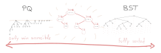

Conference paperFOCS 2020December 2020
Lazy Search Trees

This paper marries the theory of efficient priority queues with the more powerful interface of binary search trees. Our lazy search trees can operate as a priority queue or a full sorted dictionary and – without changes to the data structure – performs close to optimal in both scenarios, (and indeed also in many intermediate ones).

The main technique is a new binary search tree variant that offers faster insertions – often $O(\log \log n)$ instead of $O(\log n)$ time / comparisons – when queries do not force us to sort (parts of) the stored elements.
Our actual performance statement is much more fine-grained and depends on the ranks of all queries executed on the lazy search tree. The performance matches a lower bound from multiple selection up to an additive $O(\log \log n)$ term per operation.
The data structure works on a pointer machine and is comparison based.
While the analysis requires a careful amortization argument, the data structure itself is easy to implement and has practical potential.


Reference
Bryce Sandlund and Sebastian Wild: Lazy Search Trees. Foundations of Computer Science (FOCS) 2020 , in S. Irani (ed.): FOCS 2020, IEEE, 2020, pp 704–715. doi:10.1109/FOCS46700.2020.00071
BibTeX
@inproceedings{SandlundWild2020,
title = {Lazy Search Trees},
author = {Bryce Sandlund and Sebastian Wild},
editor = {S. Irani},
booktitle = {Symposium on Foundations of Computer Science (FOCS) 2020},
pages = {704--715},
publisher = {IEEE},
year = {2020},
doi = {10.1109/FOCS46700.2020.00071},
eprint = {2010.08840},
urlHidden = {https://www.wild-inter.net/publications/sandlund-wild-2020}
}
Timeline
- Sep 2020 written
- Oct 2020 arXiv 2010.08840
- 20 Nov 2020 seminar talk at Department Seminar Series, University of Liverpool
- Dec 2020 FOCS 2020